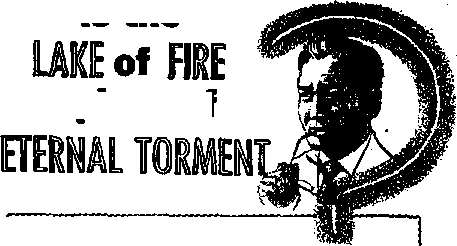
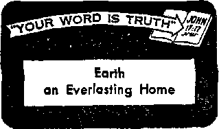
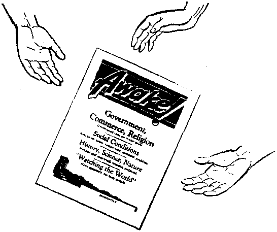

IS THE LAKE OF FIRE A PLACE OF ETERNAL TORMENT?
Many people have been deceived
The Suez Canal As French as onion soup!
The Terrible White Powder
The story of narcotic addiction
Earth an Everlasting H®me
News sources that are able io keep you awake to the vital issues of our times must be unfettered by censorship and selfish interests. “AwakeI” has no fetters. It recognizes facts, faces facts, is free to publish facts. It is not bound by political ambitions or obligations; it is unhampered by advertisers whose toes must not be trodden on; it is unprejudiced by traditional creeds. This journal keeps itself free that it may speak freely to you. But it does not abuse its freedom. It maintains integrity to truth.
"Awake I” uses the regular news channels, but is not dependent on them. Its own correspondents are on ail continents, in scores of nations. From the four corners of the earth their uncensored, on-the-scenes reports come to you through these columns. This journal's viewpoint is not narrow, but is international. It is read in many nations, in many languages, fay persons of all ages. Through its pages many fields of knowledge pass in review—government, commerce, religion, history, geography, science, social conditions, natural wonders—why, its coverage is as broad as the earth and as high as the heavens,
"Awake lM pledges itself to righteous principles, to exposing hidden foes and subtle dangers, to championing freedom for all, to comforting mourners and strengthening those disheartened by the failures of a delinquent world, reflecting sure hope for the establishment of a righteous New World.
Get acquainted with “Awakel” Keep awake by reading "Awake!”
WO""'*
Published Semimonthly By WATCHTOWER BIBLE AND TRACT SOCIETY OF NEW YORK, INC. 117 Adams Street, Brooklyn 1, New York, U. S. A. N. H. Knorb, Preeident Grant Suitsu, Secretary
Printing thia isaue: 2,000,000 Five cents a copy
Other larteutei in which “Awake!” Ie leblhhed: Semlrnnthly—Afrikaans, Finnish, Frencb, German, GreeH, Hollandisl), Norwegian, Spanlah,
Sweflieh-
Monthly—DanUlr, Japanese, Portuguese, Ukrainian.
Yearly Bubscrlpdori rat+y
QfBttS far semimonthly editions
Arwrlca, U.S., 117 Adams St, Brooklyn 1, NA. »1 AMtrall*. 11 Bflrarford Rd.. Stratiifleld, N.B.W. 9/‘ CaniAa, ISO Brtdgelacd Ata., Park Road P.O.,
Emlanf, 34 Craven Terrace, London W. 2
New Zealand, fi.PO. Box 30. Wellington, C. 1
Stith Africa, Private Bag, Eiandsfontein, Tvl.*
Ninthly editions cost half the alwo rata.
Remittan ms should be seat to office In your country In compliance with regulations to guarantee safe delivery of money. RemltlanceB are accepted at Brooklyn from countries where no office la located, by International money order only. Subscription rates in different countries are here stated In local currency. Nutl** Of expiration (with renewal blank} is oent at leant two issues before subscription aspires. Chang* *f aldrau when sent tn onr office may be expected effective within one month. Send your old as well as new address.
Entered as aecond-clasj; matter at Brooklyn, N.Y. Printed in U.S.A.
CONTENTS
Revolt Does Not Stop Freedom of Worship 3
Is the Lake of Fire a Place of
How Much National Advertising
Quenching Thirst the Curious Way
Hawaiian Beans and Seeds to Wear
Suez Canal—as French as Onion Soup
Hospitals, Please Take Notice!
Heart Disease Increases Among Women 24 "Your Word Is Truth"
Jehovah's Witnesses Preach in All
D0ES N0T °F
an
By "Awakei — correspondent in Cuba !
BOUT 12:30 p.m. Sunday, the 29th of April, six large stolen gravel trucks entered the city of Matanzas, Cuba. Their occupants were a group of heavily armed insurrectionists bent on overthrowing the present government of Cuba under
President Batista. About sixty different persons were in the trucks, hidden behind sandbags. The trucks were gravel dump trucks and did not arouse any suspicion. They headed straight for the army post in the heart of Matanzas.
Stopping only about forty feet in front of the local army post the occupants immediately began to fire on the building. Soldiers defended the post. The battle raged more than an hour. Other government forces were notified, even the large military post in Havana. The Cuba air force was alerted and planes were on their way to Matanzas, about eighty miles from Havana. The post’s defense took deadly toll on the attackers. The dead mounted.
Many of the insurrectionists began to lose nerve and flee. Some, heavily armed, lost themselves in the city, while others fled to the outside, where the rurals led into close-by hills and mountains. By this time about ten armed army planes were circling overhead, their roaring motors adding to the tremendous consternation and the already supercharged hysterical conditions. As the last shots died down fifteen attackers were dead, while three soldiers were severely wounded.
The president of the country, General Batista, called an immediate cabinet meeting, as evidence indicated that the attack in Matanzas was not purely a local affair but only an expression of what revolutionary elements plan on doing throughout the island. The government then decreed that a 45-day suspension of constitutional guarantees was necessary to enforce order.
Circuit Assembly of Jehovah’s Witnesses
At the same time as this violent event in the city of Matanzas something else that is interesting was taking place within the same city. A circuit assembly of Jehovah’s witnesses was being held less than ten blocks from the very trouble center
where the shooting occurred. On Saturday, the second day of the assembly and one day before the bloody attack was made against the military building, two young lady publishers were presenting the two magazines from house to house. At one home a bitter opponent of Jehovah’s witnesses began using vile language against the witnesses, hit one of the young sisters on the cheek and cut her face. Her brother, working across the street, tried to protect the girls *and the man attacked the boy.
A crowd began to gather and the three young publishers started running to the convention hall. The crowd ran after them. When they reached the convention grounds the local congregation servant, a special pioneer, was grabbed by the mob and beaten unconscious. While blows were being rained on this brother a policeman happened by and fired two shots into the air and the mob scattered. The brother was taken to a hospital.
Then the district servant and the circuit servant, together with others, one of whom was an actual witness of the mob violence, went to the police station to enter a complaint. The policeman who had stopped the mob refused to sign the complaint or even charge any mobster with disorderly conduct However, one of the brothers who was present is a very good friend of the highest military official in Matanzas and he immediately told the police that he was going to this official to demand an immediate investigation.
This had its effect. The policeman stated that he would be glad to sign the accusation, and he did so. Strangely, about this very moment the leader of the mob entered the station with a lawyer and said he wanted to charge Jehovah’s witnesses wi^h trying to extort $10 from him at his home by these two young girls. All the bystanders, including the police, ridiculed this complaint. Then the policeman who originally appeared to be the man’s friend, and probably was, ordered him held prisoner.
The brother who had mentioned going to a higher military authority did go and he saw this official. This army officer appeared to be greatly surprised and promised that on Monday morning the following week he would personally right whatever wrong had been done and that this mobster and others in the mob would receive a just punishment.
After that Saturday-aftemoon incident the assembly finished the day according to schedule, with many brothers benefited from the fine program. Then came Sunday. The district servant, his wife and several other brothers were staying in the hotel directly in front of the military post. When the shooting started after 12 noon all occupants had to leave the hotel by a back entrance. They were allowed to take only the clothes they had on. The brothers went to the hall, all of this taking place with bullets zinging overhead and machine guns with their deadly staccato in action.
It was expected that surely now as 3 p.m. rolled around and the shooting had stopped, the local authorities would stop the assembly. The board of directors of the fine auditorium held an emergency meeting and decided that Jehovah’s witnesses could continue their assembly if the police did not care. So amid great revolutionary activities, dead bodies being gathered up, many being arrested, the district servant began his talk on the timely subject “Surviving the Fears of This Generation.” Very few if any strangers were present. They were too scared even to stick their head out of a window. Nevertheless the assembly continued its regular schedule through the last talk by the district servant.
It is almost certain that any other type of assembly or meeting would have been canceled, but it was not done in this case. Surely Jehovah God is with his people.
wwWODAY when an ilf American speaks
1 of a person's be-irigl‘burned up” he means that the person has become extremely indignant. And when he says, “She got my goat,” he means that a woman irritated or annoyed hjpi. Again, when he speaks of a “lady-killer” he refers to a man who fascinates the womenfolk.
However, it could be that a few hundred years from now when one reads these expressions he would take them literally, because they may have lost their colloquial and metaphorical meaning. With the passing of the years meanings of words change and they lose their figurative meaning or take on an entirely different one, at times even an opposite meaning. This accounts for archaic expressions and is the reason why new translations of the Bible were needed to replace the older King James and Douay versions of the Bible. This we shall find is the case with the Biblical expression “lake of fire.”
That language change is germane to our subject is recognized by a leading spokesman for the Roman Catholic Church, the “Doctor” Rumble. Writing in the New Zealand Tablet, June 9,1954, he states that the use of the Hebrew word aheol and the Greek word hades to denote the place of eternal torment is archaic and that these words originally had a much broader meaning and referred to the “netherworld.” According to Rumble this is why Monsignor Knox at times translates sheol
is the
a place of
Aue/b ad,“H»u
Pictur'd as Awful Reality"<23ta^ “Popa Warns Jurists; Hell Real, Eternal"
and hades as “grave” or “place of death.”* He then quotes Monsignor Knox’s translation of Luke 12:5, “Fear him who has power not only to kill but to cast a man into hell,” to prove that there is a hell of eternal torment for the “damned.”
However, Knox did an incomplete job of his translation, for he did not indicate what word he here translated "hell” so as to distinguish it from the Greek word hades, which has the thought of the “nether-world” only if we consider this the condition or state of the dead, or grave-dom. In consulting the popular modern Revised Standard Version we find a footnote indicating that “hell” translates the Greek word gehenna. So according to Rumble and Knox gehenna is really the place of eternal torment for the damned. Is that the meaning of gehenna, and did Jesus use it with that meaning in mind? Or could it be that here again a change of meaning is involved: the word denoting one thing to Jesus in his day and another thing to Knox, Rumble and others in our
* Knox translates hades “place of death." twice and “heir’ eight times.
day? What do the facts of history and the Bible show?
Jesus used this term gehenna eleven times all together and James used it once, for a total of twelve times that it occurs in the Bible. It is a Greek transliteration of a Hebrew expression and refers to the "valley of the son of Hinnom,” which is first mentioned at Joshua 15:8. It was situated just outside the south and west walls of the city of Jerusalem. The National Geographic Magazine, December 1952, page 840, in its article on “Bible Lands,” featured a beautiful picture of this valley and explained that it was "the shallow Valley of Hinnom (Gehenna), once the scene of child sacrifice to the god Moloch and later an ever-burning refuse heap.”
This valley was not always shallow. In ancient times it was steep, narrow and ragged. According to tradition King Solomon had a music grove in a portion of this valley, the part known as Tophet. No doubt during the time Solomon was faithful the vocal and instrumental music with which this grove resounded included paeans of praise to Jehovah. However, when Solomon became unfaithful he erected altars to the god Moloch in this grove.
In later years, particularly during the reigns of the wicked kings Ahaz and Manasseh, the grove Tophet of the valley of Hinnom was filled with the cries of children being sacrificed to Moloch. This idol was a huge hollow brass image within which fires were kept burning, the children thus being burned alive. It seems that this barbarous form of idolatry plagued the Israelites even before they came out of Egypt, for God repeatedly warned them in his law to Moses that they were not to engage in this worship and that any parents that did were to be stoned to death. Concerning this pagan form of worship Jehovah had Jeremiah say: "They have built the high places of Tophet, which is in the valley of the son of Hinnom, to bum their sons and their daughters in the fire.” Because of this pagan worship Jehovah warned that instead of the valley of Hinnom it would be called “the valley of slaughter: for they shall bury in Tophet, till there be no place.”—Jeremiah 7:31, 32.
The religious practice of offering human sacrifices, and especially children, is an ancient one and authorities tell of hundreds of children being sacrificed at one time to pagan deities. Parents would offer their choicest treasures, their own children, either to appease or to gain the favor of such monstrous pagan gods. But Jehovah emphasized that he never commanded such a thing and that it had never even entered his mind. That faithful worshiper of Jehovah, King Josiah, put an end to this gruesome practice. He had the idol destroyed and had the area turned into a dumping ground for Jerusalem’s garbage. To help destroy the garbage, brimstone or sulphur was added and so fires were kept burning all the time. Thus it truly was “an ever-burning refuse heap.”
Included in the city’s offal that was thrown into this valley were the carcasses of unclean animals or those that had died of themselves. Likewise, the bodies of executed criminals were thrown into this lake of fire, as not deserving of a resurrection and therefore not given a decent burial. However, let it be noted that nothing alive was ever thrown into this valley. It was with this background in mind that Jesus used the term gehenna.
Pertinent here is the footnote on Mark 9:43, 45 of the Catholic Confraternity version, which shows that the words “Where their worm dies not, and their fire is not quenched,” do not appear in verses 43 and 45 “in the best Greek codices [although
they do in the Douay and Monsignor Knox’s versions], but the text concerning the sufferings of the damned is found in verse 47. It is a quotation taken from Isaiah 66:24.” Apparently in their zeal for eternal torment the copying monks put these words three times in the mouth of Jesus although he had uttered them only once.
As for Isaiah 66:24's telling of “the sufferings of the damned," what that text actually does say is: “And they shall go out and see the carcasses of the men that have transgressed against me. Their worm shall not die and their tire shall not be quenched: and they shall be a loathsome sight to all flesh,”—Dowry.
What Gehenna Pictured
Is there any suggestion, not to say anything of a plain statement, of suffering, of torment, in this text, Isaiah 66:24? Not at all. What are seen are not men writhing in a Dante's inferno, but only carcasses, loathsome, disgusting and abhorrent, of the men who transgressed against Jehovah. It does not say that men do not die or that the “souls” of men do not die, but that the worms do not die. The valley of Hinnom doubtless had ledges on its sides, and so at times bodies thrown into it did not reach the flames of gehenna but landed on these ledges. Such bodies would then be consumed by the worms. So the two statements “their worm shall not die” and “their fire shall not be quenched” have no thought of torment but both express the same thought of complete destruction.
That Jesus intended these expressions to be taken as figures of speech rather than literally can be seen from the context of Mark 9:42-47. He was saying that if our hand, foot or eye caused us to sin it would be better to sever it from our body and enter the kingdom of the heavens with one foot, hand or eye than to keep both of these and be thrown into Gehenna. Do we for a moment think that Jesus Intended us to take his words literally? Of course not! Rather he meant that if any possession or habit, even though as dear to us as our very limbs or our eyes, caused us to sin we would have to get rid of it. So let us not do violence to the rest of the Bible and to reason by endeavoring to take his remarks about undying worms and unquenchable fire literally.
That this Gehenna or lake of fire pictures destruction is also to be seen by Revelation 20:14: “Death and hell were cast into the lake of fire. This is the second death.” A second death? Yes, to distinguish it from the first kind of death that came to us as a result of Adam’s sin. Those dying the second death will have no resurrection but will remain dead forever. The lake of fire pictures annihilation, extinction, extermination. “The dead know not any thing.”—Ecclesiastes 9:5.
Note here also that death and Hades are thrown into the lake of fire. Are they personalities that can sin and be punished in a literal lake of fire? No! But when we understand that the lake of fire pictures destruction, then all is clear. Since Christ will rule until the last enemy Death is destroyed, it can properly be said that Death will be thrown into the lake of fire. And when all those in the memorial tombs upon hearing Jesus’ voice come forth to a resurrection, thus emptying Hades, it can be said to be thrown into the lake of fire, for it also will be destroyed.—1 Corinthians 15:25, 26; John 5:28, 29.
Everlasting Punishment and Torment?
But perhaps someone will ask, Did not Jesus speak of everlasting punishment, and does not Revelation tell of some being tormented forever? And what about the rich man in hell?
Regarding the rich man and Lazarus, a careful study will show that this is a parable and not a historical incident.1 For one thing nothing is said about the rich man’s being bad or Lazarus’ being good. In fact, the Jews in their Gemara have a similar parable.
As for Jesus’ reference to “eternal punishment,” mentioned at Matthew 25:46 (Knox), the Greek word rendered “punishment1 is kolasis. It literally means a pruning or cutting off, and therefore the New World Translation renders the above phrase "everlasting cutting off.” The wicked will not suffer pain forever, but "they shall be as though they had not been.” Their punishment is death and it will last forever in that they will remain dead for ever.—Obadiah 16.
As for Revelation 20:10, which tells of some being "tormented day and night eternally” (Knox), to understand this expression we must first recognize that Revelation is written in highly figurative language, We would not think of taking literally its references to War, Famine, Death and Hades’ riding horseback, would we? Then neither should we take literally the references to Satan, the beast and others’ being tormented for ever and ever.
The Greek word here rendered "tormented,” basanizo, comes from a root that has many meanings; it being also the root of the name given to ancient jailers because they made trial of prisoners and it also meaning the Lydian touchstone, which was used to test the genuineness of gold and silver. This highly figurative language, therefore, tells that the wicked, including Satan the Devil, will be eternally held in the bondage of destruction and that their destiny will serve throughout eter-
* For details see The Watchtower, February 15, 1954. nlty as a touchstone testifying to the genuineness of Jehovah’s sovereignty.1 Yes, in a book of symbols reference to torment is also to be taken symbolically.
The New York Sun, December 23,1948, had a front-page picture of an eight-year-old boy whose mother had held his hands over a flaming gas jet as punishment because she thought he had stolen ten dollars. The boy’s hands had been so seared that it was necessary to amputate his little finger. For this she had been jailed and held because of being unable to furnish $1,000 bail. People were properly outraged at a mother’s inflicting such inhuman treatment upon her child. Yet hundreds of millions of people hold that God will sear, not only the hands, but the whole bodies of billions and that, not just for a matter of seconds or minutes, but throughout eternity. Does it make sense? Does it?
“God is love.” And justice is the foundation of his throne. His Word tells us that with him is the fountain of life and that "the gift of God is eternal life.” Life would not be a gift if we could not reject it, but reject it we can. The opposite of life is death and so we find that the Bible puts life in contrast with death, not life in bliss with life in torture. “The Lord preserveth all them that love him: but all the wicked will he destroy.” According to Webster to destroy means "to bring to naught by putting out of existence.”—1 John 4:8; Romans 6:23; Psalm 145:20.
The lake of fire is not a place of eternal torment but a symbol of destruction. Misconceptions regarding it instill morbid dread and dishonor God. The truth about it is both reasonable and comforting and magnifies Jehovah’s supremacy and justice.
subcommittee of the United States Senate heard 346 witnesses in thirteen cities give 8,600 pages of sworn testimony on the illegal drug traffic in the United States. Their testimony was so shocking that the subcommittee promptly recommended that the penalty for violation of the narcotic laws be greatly increased. Congress acted on the recommendation and passed a bill that allows the extreme penalty of death (if the jury recommends it) as punishment for people who sell or give heroin to any person under eighteen years of age. On June 9 the law was sent to President Eisenhower for his approval. He approved it July 18. What had prompted such drastic action? The subcommittee had uncovered the fact that the United States’ drug problem is the worst in the Western world. Illicit drug traffic has trebled in the United States since World War II. The nation's 60,000 addicts amount to one for every 3,000 persons throughout the land!
The new law resulted especially from the legislators’ concern over the ease with which teen-agers, at least in certain neighborhoods, can obtain heroin. Heroin is a powerful narcotic derived from opium. This white powder‘is the drug used by 80 percent of all United States’ addicts.
When the congressional investigators visited New York, an eighteen-year-old boy told them that he had been introduced to heroin at a Christmas party and had become a burglar to maintain the costly habit. His 21-year-old sister testified that she had become addicted when she grew tired of nagging her husband to give up narcotics. The 23-year-old husband said he had become an addict out of thrill-seeking curiosity. The spectators at the hearing were shocked to hear the young wife say that she had been offered heroin three times within a few days, while pushing her baby carriage along a New York street.
In recommending the severe new antinarcotics legislation, Senator Price Danie), who headed the investigating committee, said drug traffickers are “selling murder, robbery and rape," that “their offense is human destruction as surely as that of a murderer,” and “in truth and in fact, it is ‘murder on the installment plan,’ leading not only to the final loss of one life but to others who acquire this contagious infection through association with the original victim.”
The new law requires a fine of up to $20,000 for illegal possession of narcotics, plus a two- to ten-year imprisonment for the first offense, from five to twenty years on the second offense, and from ten to forty years on the third. For the illegal sale of narcotics there is a $20,000 fine, plus five to ten years’ imprisonment on the first offense and ten to forty years on the
October a. isse
second. No suspension of sentence, probation or parole is to be allowed.
One reason why the dope trade is so vicious is that it usually leads to other crimes. If an addict is able to obtain an ample supply of his narcotic he may continue to do highly skilled work and show no evidence of the habit except for the needle ma»ks on his arms and legs. But when he is unable to get his drug he becomes excitable and nervous. He sleeps fitfully. His muscles twitch and his back and legs cramp. He is hot one minute and cold the next. On the second day he is restless in the extreme. He retches and vomits. By the end of the week he is comfortable, but is still weak and nervous, and may complain of insomnia. The fear of this ordeal drives addicts to commit crimes to obtain money for the narcotic to which they have become addicted.
The head of the United States Bureau of Narcotics says that the average addict spends $10 a day on dope. Dr. Herbert Berger, chairman of the Committee on Alcoholism and Narcotics of the New York State Medical Society, says $30 to $100 is not unusual.
Where does the addict get such sums of money? Through bookmaking, burglary, policy slip running, pilfering, shoplifting or prostitution. Worst of all is the practice of initiating other persons, even school children, into the narcotics habit so that the commissions on the sales will assure the addict’s own supply. The senators said that “crime in the United States would be substantially reduced if drug addicts were taken off the streets and placed in appropriate institutions for treatment or detention.”
“Treatment” sounds fine, but all too often the addict gets only detention. The 1955 Annual Report of the New York City Department of Correction says that even in New York addicts “go through the period of violent withdrawal in isolated cell units but with no medical treatment whatsoever.” At only one of the city’s prisons can they “undergo withdrawal under medical supervision but with no routine medical treatment.”
But no matter what methods are used, only a small number of addicts stay completely well. The New York Department of Correction’s report says: “No known method of treatment has been productive of more than a handful of successes.” Dr. Berger says that for such addicts jail “is not a cure. Unfortunately none is known.”
During the 1890-99 decade, when all kinds of opiates could be bought as freely as a bag of groceries, there was one opium addict for every 300 persons in the United States. They worked about as well as other people, and gave little trouble, except that they were injuring their health and that thousands who sought freedom from this slavery failed to get it.
Physicians agitated for restrictions, and by 1912 every state except one had laws that in some way regulated the sale of narcotics. However, real addicts could still get their supplies legally, without much trouble or expense.
In 1915 a more stringent law became effective and hundreds of addicts were cured by deprivation. After that physicians who prescribed narcotics for the preservation of the addict’s health, or to enable addicts to continue to earn their living (as well as other physicians who may not have had such noble reasons) wound up in the penitentiary. Deprived of narcotics, addicts who had held jobs for years became sick. They lost their jobs and their source of
income. Clinics were established where they could get the drugs that would keep them going, but practically all of these had closed by 1923. Dr. Kolb, former chief of the United States Public Health Service’s Division of Mental Hygiene, says this was partly because of poor management, but chiefly because “addiction had become a crime, by legal definition.”
The good effect of the strict narcotic lajys is that addiction dropped from the 1890-99 figure of one in every 300 members of the population to, by a decade ago, only one out of every 10,000. The bad effect is that narcotics have thus become a profitable business for the lawless elements, who have a definite reason to profit from addiction’s growth. And addiction is now becoming increasingly serious. The number of addicts has multiplied three times in the last ten years, from one in 10,000 persons ten years ago to one in every 3,000 persons today!
Further, the legal approach strikes at the distributor, but does not help the addict. The attorney general of the State of New York, while supporting strong legislation against dope peddling, has also called for an “enormous expansion and development” of research projects, of facilities for treatment, of help after treatment, and even of an experiment in restricted legal distribution of narcotics.
The Wrong Approach?
In line with this last suggestion, some people say that the whole idea of jailing addicts is wrong. Dr. Laurence Kolb said in a Saturday Evening Post article: “There is nothing about the nature of drug addicts to justify such penalties” as the law now applies, and that these penalties “only make it difficult to rehabilitate offenders who could be helped by a sound approach.” He feels that addicts who cannot be cured could, under proper controls, “be given opiates for their own welfare and for the public welfare too,” and that then their need to turn to crime to get the money with which to buy narcotics, on the illegal market would be ended.
The people who propose this solution say that opiates themselves do not stimulate their users to crime, but have exactly the opposite effect. They say that while cocaine causes anxiety, opium relieves it, and that opium actually makes a person less likely to commit a crime while under its influence. As addicts have put it: “You have no guts, it brings out the yellow in you, and a man can slap you in the face and you won’t resent it; but you do things there are no risks in.”
People who think the idea of jailing narcotic addicts is wrong point to the apparent success of a different system in Britain. There doctors are free to prescribe narcotic drugs when they find that the opiate cannot safely be discontinued, or when the patient can lead a useful, normal life when a certain minimum dose is given, but cannot do so without it. What is the result of this policy? Britain, with a population of 50 million, has only 279 known addicts!
Conclusions
That the American problem is serious is an obvious fact. There are fewer addicts now than when there were no legal restrictions, but those who still use narcotics often are driven to crime to pay for their dope. The problem is made more difficult by the fact that many who become addicts are people who were already experienced in crime before becoming addicted. Imprisonment alone has not solved the problem, although a marked decline in narcotic violations has been reported in areas where
heavy fines and long prison sentences have been imposed. Nor have treatments for this enslaving habit really proved successful. The extent of addiction is growing, and no real solution seems to be tn sight.
Good it is to know, however, that such conditions soon will give way to both mental and physical peace in the new earth that God's Word, the Bible, promises He will create tn our time!—Isaiah 65:17.
Twenty-three years old end eight years an addict— that is Frankie’s story. Frankie, who comes from a good family and Uvea in the suburbs, has twice been jailed for addiction, once when he stole from the police chief's house to get money for dope.
Frankie was interviewed by Jess Steam, New York Paiiy News reporter who wrote that the addict's trips to New York for heroin were so regular that he bought a commutation ticket in order to ride cheaper. He needed the money for dope, Frankie said
Y? How much do his drugs cost? “I make $90 a week as an electrician's helper, and I need another $25 or so to buy what I need.” Where does he get the money? From his father, '*the only one in the family who has not given up on me. I can nearly always go to him and get an extra $10 or $20, saying I need it for a date.” ,
Frankie's father probably does not believe him, but he fs afraid that if he does not give his son the money he will go out and get It another way. "Sometimes I feel ashamed to think I'm deceiving the only person who has apy faith In me/* he admitted, "but I've never felt so much shame that I haven't felt the need for the stuff more.”
Frankie showed few outward signs of addiction, except for the needle marks on his arms and his inability to look the reporter In the eye. He had thought of getting into a New York hospital for teen-age addicts, but did not think his buddies had benefited from It.
% Are addicts dangerous? *Tve known lots of addicts,” he said, "and I've never known one that did anything violent—unless, of course, he was interrupted while he was stealing, or something like that.” Do peddlers give dope to youths to get them started? Frankie said: “I think the smart pushers don't try giving it to the kids now; most kids today would get suspicious of something they got for nothing, and pushers know that kids that get hooked will hook other kfcfc. IC makes their work easy for them.”
WHAT DO TV-ADS COST ?
<L Twenty-five thousand dollars is a lot of money to the average man. But how much is it in the advertising world? How many color pages in Life magazine would $25,000 buy? How many half hours on television? How many, black-and-white pages In Thia Week magazine? How many one-minute selling messages, using forty-eight of America's leading radio stations? The answer, according to a recent advertisement, is: “$25,000 won’t buy you a color page in Life—you’ll have to find $7,740 more.” As for television, you are not in the league at all with $25,000. "Published figures tn a leading trade magazine estimate the weekly production cost of a medium priced half-hour show at $33,000. The time will be extra.” Your $25,000 cannot even buy a full black*and-white page in This Week magazine. You must add $4,180 to get a page. It can buy only thirteen one-minute selling messages, using forty-eight leading radio stations. Four times that sum, or $100,000, "will buy 6 color pages In an excellent women's magazine with over 4 million circulation”; ”$250,000 is almost enough to buy 5 color pages in two leading Sunday supplements, with a combined circulation of about 18,000,000”; and ”$500,000 will buy an average TV half-hour nighttime show once weekly on a major network—but only for 7 weeks.”—The New York Times, April 30, 1956.
HOW curious is the way some of nature’s creatures quench their thirst! Some drink through their skin. Some have to sleep for months until it rains. One of nature’s creatures digs its own wells. Others store up or conserve water in novel ways. Curiously enough, there are animals that do not seem to have any thirst; at least they never take a drink in their lifetime!
Imagine quenching your thirst by just taking a walk in the morning air. That is what a small lizard in Australia does. Called thorny devil, it is nine inches of oddity in lizard form. Thorny lizard looks like a piece of cactus plant that broke off from the main stalk and walked away. Spikes give it a grotesque appearance. No handicap is this in the sandy regions where he wins his living, for he drinks through his skin. The more skin surface, the better the drinking! Writing about thorny devil and his moisture-absorbing skin one naturalist says:
“He catches the dew. For this reason it is necessary for him to have as large a skin area in proportion to his content as possible. The many spikes and protuberances give him this large skin area, and with this
he catches the small dew which fails at night The whole skin is absorbent, as can • easily be demonstrated. While I was in the bush, I had three of them tied to one of the guy-ropes of my tent and often amused myself by putting a drop of water on one or other of their backs. The drop disappeared as if Into blotting-paper. That is how these little creatures drink.”
Sleeping Through the Drg Spells
For humans a rainy day is fine for sleeping. For many of nature’s creatures the bright, dry day is best for sleeping in. When things are damp a land snail feels energetic. When things are dry the land snail worries about keeping moisture in his body. Some crawl under objects lying on the soil. Others keep their body moisture by cutting off evaporation. They make for themselves a tough membrane of dried mucus. With this they seal over the opening of their shells. Then the snails cozily sleep out the dry spell in their self-made humidors.
Reminding us of the story of Rip van Winkle is the African and South American lungfish. But its sleeping exploits are not fictional, as were Rip van Winkle’s. The eellike lungfish lives like any other fish except that it rises to the surface to breathe. During the dry season the lungfish’s watery home may vanish. Trapped in mud
the lungfish sees disaster ahead unless it can keep its body from drying out.
So Mr, Lungfish burrows into the mud for a good sleep. But first he makes from his skin glands a cocoon of dried slime. This substance completely envelops the lungfish’s body except at the mouth. Now the lungfish does not have to worry about drying out; it contentedly goes to sleep, knowing that some day rain will come into its life. Even if the mud becomes hard as cement, that is all right with the dozing lungfish. What if the lungfish is imprisoned for months? No trouble at all to nature’s Rip van Winkle, for it sleeps out the longest dry spells—from one to five years if necessary! When the rainy season comes, immersion in water wakes up the lungfish. It breaks out of its self-made humidor wrapper and it livens up in its watery paradise.
To the elephant, going to sleep is hardly the way to face a water shortage. Why not do something about it? is the way the elephant feels. So the elephant does the logical thing: he digs a well. When a river goes dry in Africa, elephants dig holes in the apparently dry bed. Rarely do they fail to find what they are looking for. According to Mervyn Cowie, director of Royal National Parks of Kenya, elephants “scrape away the sand with their trunks in a slanting hole, deep enough for the water to percolate through and form a small pool, sometimes four feet below the surface.”
After the pool is formed the elephants suck water up with their trunks and squirt it into their mouths. Reserve tanks must be filled; then the elephants lumber off, allowing thirsty lions, zebras and giraffes to quench their thirst at the newly dug well.
Time used on digging wells could be more profitably used is the way the camel feels about the matter. Drink enough to last; that is what the camel believes to be the best policy. Fifteen gallons at a time is a moderate-size drink for a thirsty camel. A camel well charged with water can exist for eight days or longer without a refill. Just where the camel stores his water was, until just recently, one of nature’s great riddles.
Ancient lore had it that camels stored water in their humps. But humps are filled with something else. Filled with fat, the humps are the camels’ portable pantries from which they draw nourishment when other food is not available. But where is the water stored?
The most popular theory was that the camel had specialized stomachs for storing water. It was thought that for a human to get a drink, in the absence of an oasis, it was enough to kill a camel, slitting him open to get to the water tanks. All this, of course, is not true.
To find out how camels could go so long without water, Dr. Knut Schmidt-Nielsen of Duke-University directed a year’s study. The work was done in the Algerian Sahara. Last year Dr. Schmidt-Nielsen reported his findings. The camel’s unique ability turns out to be the result of extraordinary gifts that are not shared by any other animal that is useful to man in arid parts of the earth.
No tanklike compartments for the camel! Instead the report showed that they conserve every drop of water in body tissues. When water is needed for digestion and for evaporation, it comes from the camel’s tissues, from the spaces between his muscle cells and from the cells themselves. That is the unraveled riddle.
One of the camels used in the study ate only hay and dried dates for 17 days. It decreased in weight from 660 pounds to 458 pounds. Then this ship of the desert took in 20 gallons of water and increased his weight by 30 percent. He was outdone by another camel that drank 30 gallons in ten minutes —12 quarts a minute!
The camel has many other gifts: he does not pant, never breathes with his mouth open and he does not cool himself by evaporation. It follows, then, that his body temperature must rise above normal in hot weather. It does. This was the most surprising result of the research. In hot weather his body temperature can rise from 90 degrees F. to 104 without ill effect. When the limit of 104 degrees F. is reached, sweating sets in to keep the body temperature from rising any higher. “Even then,” says Dr. Schmidt-Nielsen, the camel “does not drip with perspiration.” Its skin always feels dry.
Waterless deserts are often fairly rich in animal life. But how do the creatures quench their thirst? Some tap vegetable canteens—juicy plants, such as the cactus. If the desert tortoise wanders into waterless territory he has no worries; for this creature is a walking canteen himself. He has sacs under his shell In which he carries his water. One pint lasts for a season.
As rice is vital to the economy of many countries, so a certain general type of rodent is basic to the economy of many deserts. In the southwest United States a rodent of this type, the so-called kangaroo rat, is the desert’s bread, butter and water. Practically all desert creatures eat and enjoy the kangaroo rat. The desert fox gets both his food and drink by making the kangaroo rat his regular menu. Fortunate for the fox that he can get a well-balanced meal in one bite!
What about the kangaroo rat himself? The little creature can live in the driest regions, even in such places as the sand dunes of Death Valley. A few years ago Dr. Schmidt-Nielsen studied this animal. He found out that this ratlike animal never quenches its thirst in the usual way, if it has any thirst. Never does it drink; seldom does it eat juicy vegetation. Its main food is dry seeds. How does the little animal keep from drying out?
The Duke University zoologist found out that the kangaroo rat stays in its burrow by day, where air is a little more humid than it is outside. “The protection of the burrow by day provides just enough margin to enable the kangaroo rat to maintain its water balance and live in the driest of our deserts,” reported the zoologist.
But even more important is the fact that the kangaroo rat has a built-in watermaking plant. The digestive system of the desert rat manufactures water (HSO) by combining the hydrogen in food hydrocarbons and oxygen from the atmosphere. Besides this the kangaroo rat’s only sweat glands are in the pads of its toe, and its kidneys are amazingly efficient. All this makes him the succulent little dish he is for the rest of the desert denizens.
Probably the desert rat’s ability to go a lifetime without drinking a ditop of water would make the camel shudder or at least envious. But the desert rat’s gifts are hardly more marvelous than those of the camel, the elephant, the lungfish or the lizard with the blotting-paper skin. All these curious ways of quenching thirst speak eloquently of the Creator’s greatly diversified wisdom. “O Jehovah, how manifold are thy works! In wisdom hast thou made them all.”—Psalm 104:24, Am. Stan. Ver.
Hawaiian Beans and Seeds to Wear
By “Awake!" conre>pand*nt in Hawaii
EARS ago the Hawaiian people used tapa for clothes, with shells, flowers and seeds for decoration.Thls ancient craft of making seed jewelry is being revived today, and we find that leis, chokers, and earrings made of beans and seeds native to Hawaii are still even more suitable for wear with Hawaiian dress than modern costume jewelry. So now many Hawaiians are gathering seeds and making their own costume pieces to fit their particular fancies.
"8? What makes Hawaii the center of the seed jewelry industry is the type of trees, vines and shrubs that grow there. Many trees have flowers similar to those of edible-fruit trees, but instead of producing fleshy fruits the “fruit” consists of various pods containing seeds that are hard and durable, varied in color and shape, and capable of being polished to a high luster—just the thing for the seedjewelry craftsman.
% A favorite among the ancient and modem Hawaiians is the nut of the kukui or candlenut tree. In days long past this nut was gathered especially for the oil-bearing nut meat inside, used for candles and lamps for lighting. In fact, kukui is the Hawaiian word for lamp. If a seed lei is desired the nuts are selected and two small holes are made in them and then they are buried in the earth to let the ants eat out the inside. This also serves to turn them from brown to a desired jet black. After sufficient time for curing they are then cleaned and smoothed with a fine file and sandpaper. Some of the nut-meat oil can be used in the final polishing. The finished necklace, looking like polished ebony, with smaller matching earrings, is striking indeed. 8? Another great source of interesting materials is the variety of palm nuts growing in Hawaii. A very popular one is the monkey nut. These, when husked, are shaped like a miniature coconut, with "two eyes and mouth” on the pointed end, just like their larger relative. When polished they are a rich, shiny brown.
*3? The nut of the Manila palm is another of rare beauty. When ripe on the tree they hang in brilliant red clusters. To get down to the actual nut several layers of fiber must be removed. After several months of curing or drying the final coat can be filed and sanded off to reveal a beautiful white nut with brownish-maroon veins. When highly polished and lacquered they Indeed look like marble stones, very durable and highly prized for chokers and earrings.
“8? Once in a while a lady might be seen wearing a pear-shaped pendant resembling an ivory claw. This is the nut of the Blue Latan palm and is quite rare. Some have dyed these a delicate green, and one has to look closely to see that they are not real jade.
*8? Those who might like something gray will be interested in the Kakalaioa seeds, often called Hawaiian pearls. The seeds are round, about the size of the end of the thumb and very hard, with fine horizontal lines visible on some. These can be waxed or dipped in clear lacquer to bring out their beauty. Strung alone they are strikingly beautiful, or for a pleasing contrast they can be combined with wild canna seeds (black), with the false Wiliwili seeds that look like red pills or cherry pits, or with the Black-eyed Susan, a tiny seed smaller than a pea, vermilion in color with a black dot or eye.
TE There is a host of other varieties equally interesting, such as Job’s-tears, a tear-shaped seed with a ready-made hole through the center; jet-black soapberry, sea bean and sheep’s eye. Some claim there are between one and two hundred varieties of seeds that may be gathered in Hawaii. Almost a hundred of these have been collected and fashioned into novel jewelry pieces. Perhaps with a bit of skill and ingenuity you too can turn seeds into articles of lasting beauty.
ISRAEL
CAIRO
SUEZa
Fitih water
Cana
THE SUEZ
is the biggest, richest man-made ditch in the world. It is twice as long as the
Panama Canal—a canal 105 miles long, 500 feet wide and 46 feet deep. Being the prin-
cipal gateway to the East, carrying three times the traffic of the Panama Canal, it is by far the busiest and the greatest of the world’s ocean highways. Last year ships flying the flags of forty-eight nations slipped through the narrow, lockless, sea-level canal at a rate of more than forty-five a day, for a grand total of 14,666 ships. Middle East oil made up more than 75 percent of the northbound traffic, while ores, metals, spices and other cargoes accounted for the rest.
Though registered in Cairo as an Egyptian corporation, the Suez Canal Company that cares for the canal is as French as the Eiffel Tower or onion soup, if you please. The canal was built mostly by French engineers, largely with French francs, and sixteen out of the thirty-two directors are French. France owns a good percentage of the company’s shares and is a key signer of the 1888 Convention of Constantinople, under whose terms the canal is operated. The Suez Canal Company employs 188 pilots of various nationalities
Ftrdon bfidgt
Lake Timwh
and about 600 administrators and technicians—most of them French, The fabulous 100-million-dollar-a-year business is conducted by remote control from a coolly aristocratic, five-story building at No. 1 Rue d’Astorg, Paris.
Although situated in Egypt and obviously French in character, the Suez Canal is, nevertheless, the “spinal cord,” the lifeline, of the British Empire, the link connecting India, Australia, New Zealand, Singapore, Hong Kong and the British settlements on the east coast of Africa with the mother country. Great Britain, therefore, is the principal user, with about 28 percent of the canal traffic being British. It can easily be seen why the British are interested in the canal and would fight to keep it open.
The Suez ditch knocks 5,000 hazardous miles off the Cape of Good Hope route from London to Bombay, a saving of 43 percent. A ship traveling from the United States to an Indian Ocean port has some 6,600 miles less to go. A round trip from Boston to Bombay pays $7,600 in canal tolls but saves eighteen days’ time, $46,000 in operating expenses. The canal puts Europe within easy reach of grain, tea, copra and jute, the ore, rubber and spices of the
East, It opens a convenient chute through which the West can pour its machinery and cement, its paper, textiles and other consumers’ goods. From its first business year, when 486 vessels passed through the canal, to 1955, when 14,666 ships carrying 115,000,000 tons used the short cut, the story of the canal has been one of success.
But the Suez Canal is not the first work of its kind constructed in the same locality. A large canal from the Red Sea to the Nile is known to have existed from at least the sixth century before the Christian era to the latter part of the eighth century A.D., when it finally became choked up and useless. To what extent this canal was used for navigation is not known. From very early times Egyptian vessels are known to have frequented the ports of southern Arabia and Ethiopia, receiving ivory, spices, aromatics and woods.
Another canal, called the Canal of Zarou, is said to have been navigable as far as the city of Zarou and was used by kings to send expeditions to Sinai and Syria. A bas relief, on one of the walls of the temple at Karnak, from the time of Seti I, shows this ruler entering triumphantly into Zarou. In this picture the canal is seen running through the center of the town. In the Roman period the channel was extended to Ostracine, a port on the Mediterranean.
Still a third canal was dug by Ptolemy Philadelphus (285-246 B.C.). Strabo tells us that Ptolemy built a lock with a double gate at its entrance in order to prevent the water of the sea from contaminating the fresh water of the Nile. There is no way of knowing how long this canal remained navigable, though some writers believe that it was not used during Cleopatra’s time (31 B.C.). The emperor Trajan is said to have repaired the Canal of the Pharaohs A.D. 98 and cleaned it out and made it navigable. It remained open, according to Cledat, for about a century but was altogether abandoned in the reign of Constantine,
The fabulous Orient, which was bringing untold wealth to England and Holland, created an insatiable appetite in France for a fair share of the East’s fortune. France was a great power in the Mediterranean and a short cut to India would be more than desirable. While England and Holland struggled for control of the Cape route, France turned her attention to the Suez as her best chance of competing with her rivals.
England paid no attention to the French. In fact, it is doubtful if she was even aware of the French negotiations. While England was not herself interested in the Suez route, she was determined, at all cost, to prevent its development. And it is understandable why she would oppose a Suez route at that time. France roamed the Mediterranean practically unchallenged. England had political and commercial interests in the East, especially in India, and was in no mood to expose these possessions to French competition. Moreover, England was tied down with a monopoly of trade with India by the Cape route and was forbidden to operate in the Mediterranean. So quite naturally her attitude toward building a canal was none too pleasant. Queen Victoria’s Britain tried, with all the diplomatic pressure, rough talk and plain chicanery it could muster, to kill the canal scheme. France was te learn how bitter, how tortuous and how illogical England’s opposition could be.
Ferdinand de Lesseps, who spearheaded the canal project, was the center of Britain’s attack. De Lesseps, almost singlehanded for more than twelve years, fought against odds and opposition that would
have crushed a lesser man. He faced undaunted the wrath of England, at times Austria and even his own countrymen. All Egypt became inflamed against the project when it was rumored that the Red Sea was much higher than the countryside, that cutting a canal through would cause the sea to inundate the land and destroy the nation. Darius and Ptolemy II, it is believed, both discontinued their work on a canal because they thought the Red Sea to be higher than the land area. French engineers, however, surveyed the area and revealed that there existed practically no difference in the levels of the seas and that the land of Egypt was virtually safe from disaster.
On November 30, 1854, de Lesseps obtained the concession for the canal, which was followed by a second concession, dated January 5, 1856. This concession set forth in detail the basis upon which the international company in charge of the canal, known as Compagnie UniverseUe du Canal Maritime de Suez, was to operate, and it also took into account the recommendations of the international commission appointed by the viceroy of Egypt—the first concession being too general. The concession was to run for ninety-nine years from the date of the opening of the canal, and at the expiration of that period would revert to the Egyptian government.
In face of threats of violence from England work on the canal was formally begun near Port Said on April 25, 1859. Hardly a month passed when the Grand Vizier demanded that no further work be done on the canal without the sultan’s authorization. The viceroy of Egypt ordered a stoppage at once of all operations and withdrew Egyptian workmen from the canal zone. When work continued with the Europeans that were on hand the British launched a blistering protest that brought all work to a halt.
These were trying times for de Lesseps. One day while he was conversing with the emperor he was asked why everyone opposed his canal scheme. “Sire," replied de Lesseps, “it is because everyone believes that Your Majesty does not wish to support it.” The emperor thereupon assured him support and protection. This marked the turning point in French policy. Other nations quickly agreed to the project thereafter.
Forced labor was used. About 40,000 men were employed, and, although only about one half of that number worked on the canal, thei’e were always 20,000 on their way to and from their homes. When dredges and other powerful machines were used work moved along much faster. Many portions of the canal were made easily enough, but at other points the excavation demanded an immense amount of labor. In one place the workmen had cut a passage ninety feet deep and 200 feet wide through sandstone rock, a great achievement a century ago. It was thought at first that the canal would take about five years to build, at the cost of $30,000,000. But because of political and commercial opposition it took ten years to complete, at a total cost of $148,500,000.
At its completion the Suez Canal was a sea-level ditch most of the way, with long one-way stretches. For about seventyseven miles it was 327 feet wide at the surface, 72 feet at the bottom, and 26 feet deep; for the remaining miles it was only 196 feet wide at the surface, the other dimensions being the same.
While keeping the canal open is comparatively easy, getting traffic through is not so simple. The operation is a matter of split-second timing. One company official explained: “Taking a liner or a battleship through our canal is a job as delicate as making watches. It requires good judgment, plenty of skill and years of experi-
ence.” Run one ship into the sand and traffic between east and west may be bottled up for weeks.
scheduled for November 17, 1869, faced a delay when a ship ran aground in the channel. Just about the time de Lesseps was to dynamite it, it floated free. Delegations from the whole world met at Port Said for the ceremonies. No less than 160 vessels were in the port, all gaily decorated with flags. After the fireworks’ display and tent ceremonials, the yacht l’Aigle slowly entered the narrow canal, carrying the great promoter de Lesseps as well as Empress Eugenie of France. Sixty-eight vessels followed. They were the first to make the voyage from the Mediterranean to the Red Sea via the Suez Canal. It was ohvious that England had lost a battle.
As soon as the canal became vital for England’s trade with India it was inevitable that it should pass under her control. The Khedive Ismail of Egypt, being greatly in debt, desired to sell 176,752 shares, which made him a junior partner in the enterprise. England’s Prime Minister Benjamin Disraeli moved with great haste, borrowed £3,976,582 {nearly $20,000,000) from the House of Rothschild and closed the deal without waiting for parliamentary sanction. While this was not exactly constitutional, it was, nevertheless, a brilliant investment. The shares are well worth more than that today, and for the past fifty years the annual dividend has seldom been less than 20 percent of the original purchase price. Thus in one clean overnight sweep England became a formidable force in the canal zone.
However, a nationalist movement protested against foreign influence shortly thereafter and rallied under the slogan “Egypt for the Egyptians.” Shareholders feared that Egypt would repudiate her debts and abolish English control of the canal. So England occupied the zone in 1882. This military occupation continued for seventy-two years.
On July 27, 1954, England agreed to withdraw its troops from the canal zone. Two years later (July 26, 1956) President Gamal Abdel Nasser of Egypt announced the nationalization of the Suez Canal Company.
This move irritated the French and the British to the point of war. As one Briton put it, “We’d like to be beastly to Nasser, but we haven’t figured out a sensible way to do it.” “Rather an ironical situation,” said another Briton, a director of the Canal Company, “considering how beastly we were about the whole thing at the start,” referring to the British opposition to the Suez Canal almost one hundred years ago.
STOLEN: ONE HOLE
•’g It is not very often that a hole is stolen—but it happened recently in the city of Buga, Colombia. It seems that a farmer dug a hole to bury a dead cow. He was unable to complete the job that day, so he put off the Anal burying until the following day. But it happened that a neighbor, who also had a cow that had just died, took more than casual interest in the recently dug hole. The next morning, before the sun peeped over the horizon, this neighbor jumped out of bed and headed for the hole. You can guess the rest; he buried his cow and thereby stole a hole. The crime was of such nature that it was difficult to describe. Some thought it was misappropriation. But whatever it might be called, to the legitimate hole owner it was just low-down robbery.
LIFESAVERS
HARD to equal anywhere in the world are the beautiful surf beaches of Australia’s coast line. Their golden sands and rolling breakers provide relaxation and relief for thousands of people during the hot summer months. Sometimes, though, it becomes perilous for the inexperienced swimmer who is caught in a dangerous current or ‘rip’ and is swept swiftly seaward, with little hope of getting back to shore unassisted. Realizing this, many would not even venture Into the surf were it not for the presence of highly trained teams of lifesavers, ever alert and adept at rescuing surfers in difficulty.
The lifesaving movement in Australia is entirely a voluntary one, members even paying to join. In the metropolitan area of Sydney there are one hundred and twenty Surf Lifesaving Clubs. Available figures show that in the last forty years at least seventy-five thousand rescues have been made despite many problems and difficulties.
The history and growth of this movement are interesting. It was in 1902 that the need for some lifesaving equipment was recognized, in view of the number of drownings among surfers; so the Life Saving Society set about erecting a pole in the center of each of the more popular beaches. From these poles were hung a coil of rope and a circular life buoy. Obviously, this was Inadequate. Being exposed to all kinds of weather the rope would quickly rot, and the life buoy was too heavy and cumbersome for towing through the heavy breakers. Then surfboats came into use, but in the early years these were unwieldy and heavy, generally consisting of discarded ship’s lifeboats converted for the purpose. The circular life buoy was superseded by the ship’s life jacket, but it proved to be clumsy and heavy, since it reached from the waist to the armpits.
In 1906 a reel was first used. This was similar to what is still commonly used today, and consisted of a stand supporting a wooden reel on which was wound a long coil of rope that could be played out and rewound by a winding handle.
For some years beltmen took up the use of cork belts, with the idea of helping them keep afloat, but this did not work out so well. A lifesaver should be able to submerge before a dangerous wave, but this would be difficult when wearing a cork belt. Nowadays belts are made of canvas, sufficient air being trapped between the two stitched layers of canvas to keep them from sinking. Surfboats now in use are light yet strong, and have two watertight compartments at each end to give added buoyancy. Today’s equipment, then, consists of chrome-fitted reels with four hundred yards of strong line, light canvas belts, buoyant surfboats and highly trained men. Nevertheless, there are still many problems in the actual rescue work.
Most lifesavers agree that panic is the worst problem. Imagine trying to get a hold on a heavy, stout middle-aged man who grabs frantically at his rescuer’s arms and head and tries to wrap his legs around the lifesaver’s knees. Or, it may be a hysterical girl clutching at the lifesaver’s hair, clawing, scratching, trying to keep afloat by pushing him under. Yes, it requires intense training on the part of lifesavers to overcome the panic of the drowning. Also, seaweed is a menace, as it is likely to appear en masse on any beach without warning and almost invariably fouls the life line.
Speaking of life lines, there is an art in bringing in a beltman on a line; in fact, public interference with the life line or operation of the reel has, at times, proved fatal to the beltman and his patient, both being dragged under and drowned because of panic-stricken haste. In most cases lifesavers prefer to effect a rescue with no life line if there are no trained clubmates present to operate the reel.
This danger of drowning a beltman if his line should become fouled on seaweed or rocks, or if inexperienced hands should draw in the line too quickly, reached a high point in 1949, and it was unanimously decided that something would have to be done. The climax came when a young beltman was tom by a shark while held helpless because of his inability to effect release from a fouled line. The New Zealand Surf Association came to the fore with a belt made in two halves, held together at the front by a long thin steel pin. The beltman can withdraw this pin and the belt falls from him in an instant. This New Zealand invention has now become stock equipment in all Surf Lifesaving Clubs.
Contrary to popular conception, fatalities or injuries owing to shark attacks are very few. One recorded case was that of an eighteen-year-old lifesaver at a Sydney beach who was well out in the surf when attacked by a hungry shark. He yelled to his mates to go for their lives. Clubmates heard his screams. One member, cut and bleeding as a result of racing across jagged rocks, took the life line and went out again, to attempt making a rescue. As he approached he saw the lad throw the shark clean back from his shoulder, but a fin slashed his throat as it passed. The brute attacked its victim again and again until the boy’s hands were gone and the flesh was stripped bare from the shoulders to the streaming stumps. His legs were uninjured and when the beltman reached him he was still treading water and conscious.
“Don’t let me go,” he pleaded. After a terrible struggle, which seemed like hours to the rescuer, he was brought in with the help of another lifesaver. Tourniquets were immediately tied on the injured areas but hemorrhage and shock were too much for the lad and he soon died. While this was a gruesome exception, stories of the seas bristling with hundreds of sharks ready to attack victims on surf beaches are not generally true.
Lifesavers are usually capable of spotting exactly where a ‘rip’ is running, merely by watching the movement of the water. A long ‘rip’ may prevent a lifesaver from bringing in his patient direct to the shore, in which case he must swim crosswise over the ‘rip,’ and not struggle against the outgoing current. After successfully making his way through it he will head toward the shore. By this time, however, both rescuer and patient may be a half mile or more from the beach and perhaps in danger of being washed onto jagged rocks by crashing breakers. Many a time lifesavers have been several hours in the water, struggling to hold a patient and fighting to keep off the deadly rocks while waiting for a surfboat to make a hazardous rescue.
Training and Equipment
Lifesavers must undergo training that is intense and thorough. The minimum requirement for membership is the gaming of the “bronze medallion." This means that they must be able to swim in heavy seas for great distances, effect rescues, operate reels, know and understand all types of resuscitation work as well as have a knowledge of the working function of the lungs, diaphragm and entire breathing system.
As lifesavers continue to go to the rescue new equipment and methods are still being tried. Some clubmen are now using a portable iron lung with oxygen tanks and stomach pump, all fitted as one unit to revive the drowning. One Sydney club has a surfboat equipped with a two-way radio, which establishes direct contact with the shore. An electrical engineer is experimenting with a waterproof microphone that could be strapped around the throat of a beltman, permitting him to give constant instructions to those on shore.
Without question the work of these lifesavers is commendable. For months during the surfing season these young men render a free public service, ever ready to spring into action whenever there is an urgent call for help or sign of distress.
Think, now, of the incomparably greater lifesaving work being carried out by those eager volunteers, who, under Jehovah God’s direction, are aiding in the rescue of tens of thousands of people each year from the restless and agitated seas of humanity. Perils, far worse than any found in the literal sea, lurk in these troubled waters. These are waters where crime’s rising tide engulfs youthful delinquents by the thousands; where lawbreakers crash the bounds separating human society from the underworld; where an undertow of vice and immorality swirls around mad pleasure seekers, pulling them deeper into depravity; where commercial sharks prey on innocent victims; where political storms beat down on the hapless masses; where false religion’s ‘rocks’ bruise her flocks and flay them until they become anemic. And now, on the crest of these waters, a gigantic wave of materialism sweeps over whole nations, submerging any buoyancy they may have had, sucking them toward the whirlpool of destruction. Only those who frantically cry for urgent help stand a chance of survival.
To the rescue go Jehovah’s witnesses, extending the life line of Bible truth to people in 160 different lands, aiding an evergrowing crowd to safety on the shores of the New World society. Truly, this is a saving to eternal life in God’s New World, wherein even 'the sea will deliver up the dead that are therein.’—Revelation 20:13.
Dinner Interruption^
Eating dinner on a roller coaster is probably not the easiest thing to do even for the strong-stomached. But passengers on a British Overseas Airways stratocruiser recently had the experience. Though not on a roller coaster, the passengers no doubt thought they were when the plane, ninety minutes out of New York en route to London, encountered hurricane Ione. An air pocket, “spawned by Hurricane Ione," according to the United Press, plummeted the airliner 700 feet In a hurry, a drop about half the height of the Empire State Building. Safety belts saved forty-four passengers from injury, but the roller-coasterlike drop interrupted dinner, as food splattered into the aisle. Crewmen prepared another meal—for those who still felt like eating.
HOSPITALS, PLEASE TAKE NOTICE!
AT0RTHWE8T Medicine, a professional 5 *V medical journal, in its February, 1956, | Issue had a report by two physicians on | the value of dextran, a blood substitute, in a J county hospital in Seattle, Washington. Among ■: other things the report stated: j
1? "Ability of dextran to support circulation > was demonstrated to us again and again. Be- j cause this preparation can be administered ; anywhere, without preliminary testing, it is ? well sulftd for emergency use. It is probably J the agent of choice for initial treatment of the shocked patient, and may be used either as a 1 temporary measure . ,, or as the only infusion । required. Because dextran is stable at room ? temperature, it can be kept on hand as a J stock solution, immediately available at all i times for use in emergencies, as in the severe- j ly injured or burned, as well as in elective < surgery. Use of dextran reduces requirements for whole blood.” 5
IP Among the case histories given was one of j a patient who "was brought from an almost < moribund state [near death} to an alert state < in half an hour.” In another "patient, where- j as vasocompressors and ordinary infusions J were ineffective, 1.5 liters of dextran restored ( the circulating volume to normal levels. No / untoward reactions occurred which could be f attributed, even in part, to dextran.... In no instance did dextran infusion interfere with the cross-matching procedure.'* even though almost all patients were either comatose or under an anesthetic when given dextran.
'V "Dextran had no detectable effect on the efficiency of the anesthesia. Dextran did not increase bleeding, even in patients anesthetized with cyclopropane.” And it was "of material aid in reducing costs of transfusion service.”
“Summary: One hundred units of dextran [at $9.00 per unit] were administered, either alone or with blood, to 62 patients In various degrees of shock, over a five-month period, and proved very effective in raising blood pressure. No untoward reactions occurred. Use of dextran enabled more prompt correction of hypotensions in the shocked patient than was possible with the usual transfusion procedure, using whole blood. By reducing the requirements for blood, with the attendant expense for cross-matching in each case, use of dextran materially lowered the cost of the transfusion service. Dextran, therefore, should occupy an important place in the hospital armamentarium for the management of shock.”—Drs. R. J. Ward, J. E, Mathwig, Dextran used was from the Wyeth Laboratories.
HEART DISEASE INCREASES AMONG WOMEN
■ BOUT twenty years ago two to three times as many men as women died of heart disease between the ages of 45 and 60, this being the commonest age for such deaths to take place. However, in recent years as many women as men have died of heart disease and above the age of 60 even more women than men have died from it. This increase seems to be due to the increased habit of smoking tobacco among women. Thus the New York Times, May 12, 1956, reported that Dr. Stanley W. Hartcroft told a meeting of the New York Section of the American Chemical Society: "I almost hesitate to suggest it, but perhaps these women over 60 who are now dying more frequently of [heart trouble] than are men, represent a group of our population that started smoking for the first time twenty years ago.” Dr. Hartcroft, who Is chairman of the Department of Pathology at Washington University Medical School, St. Louis, also observed that this increase could not be accounted for entirely by other factors such as increase in diabetes, change of dietary habits or increased pace of living.
FIOM time to time scientists and religious leaders alike make predictions concerning our world’s end. In 1950 scientists were reported to have said that the world most likely “will end in one of four ways: The moon will explode, pelting the earth with fragments; a comet will strike us, snuffing all life into extinction; a roving star will wander into our solar system, pulling the sun or planets from their paths and hurtling us to doom or the sun will either cool off or flare up and bake our world into a dead black cinder.” All of these predictions are listed as definite possibilities.
Perhaps the most notable religious prediction came in the Dark Ages, when it was said that the world would end A.D. 1000. So completely convinced were the people of this date that fanners saw no need to plant their crops; as a result, a serious famine followed. There have been scores of similar predictions by religionists from and after 1914. AB such predictions show a woeful lack of understanding and appreciation of our earth and its purpose.
Religious students may object and inquire, Does not the Bible speak of "the end of the world”? Yes, while the expression “the end of the world" does occur in some versions of the Bible, still those very same translations assure us that the earth will abide forever, that God created the earth not in vain, that he formed it to be inhabited. How can this seeming contradiction be cleared up?
According to the Authorized or King James Version Bible, Jesus, when relating an illustration, said: "The harvest is the end of the world.” And Jesus’ disciples asked him: “Tell us, when shall these things be? and what shall be the sign of thy coming, and of the end of the world?” —Matthew 13:39; 24:3.
When Jesus and his disciples spoke of the end of the world were thry speaking of our literal globe? The English word “world" has many different meanings. In the time of Christ the world largely meant the known inhabited parts of the earth, in which the Roman Empire was dominant. In Bible language “world” is frequently used for the inhabitants of the world, and, in the Christian Greek Scriptures, it means an organization composed of a heavenly or spiritual part and an earthly or fleshly part.
The term “earth” also has different meanings in the Bible. Sometimes it refers to the globe or planet that we inhabit; often to the people on the globe; sometimes to certain parts of the earth, and at other times to the ground, in distinction from the water of the globe.—Genesis 1:10; 11: 1; Psalm 24:1; 96:1; Ezra 1:2; Romans 9:28.
In the King James Version the word “world” is used to translate four different Greek words: aim, ge, kdsmos and oikou-m&te. Note the word k6smos, from which we get our English word “cosmetics.” The noted Greek philosopher Aristotle defined kdsmos thus: “A system composed of the heaven and the earth, and of the creatures contained in them; otherwise the order and beautiful arrangement of the world is called ktismos." The apostle Peter uses the word in this sense, as seen by his words: “There were heavens in ancient times and an earth standing compactly out of water
and in the midst of water by the word of God, and by those means the world [fcds-nw8] of that time suffered destruction when it was deluged with water.” Here, Peter says the kdsmos suffered destruction. But the planet earth was not destroyed nor was the human race entirely wiped out. Only a wicked, corrupt system of things that existed before the Flood came to an end. And the same will be true regarding the present kosmos: “But by the same word tlie heavens and the earth that are now are stored up for fire and are being reserved to the day of judgment and of destruction of the ungodly men.”—2 Peter 3:5-7, New World Trans.
The same facts and reasoning apply to the word used by Jesus and his apostles. In speaking of the end of the world at Matthew 13:39, 40; 24:3, the word aion is used. It does not refer to our planet earth. That is why some modern translations render it “age.” We get our English word aeon, or eon, from it. By the use of this word aion, however, Jesus did not mean just a period of time. The thing that Jesus was here stressing was the change in conditions, the change in the system of things, and not the mere ending of a period of time, such as an age is. That is why the New World Translation renders ai6n as “system of things.” For instance, we read that Christ “gave himself for our sins that he might take us out for himself from the present wicked system of things according to the will of our God and Father.” Here Jesus is not referring to a period of time or an age, but to a certain great system of things that must come to an end.—Galatians 1:3, 4, New World Trans.
Just as God caused the first system of things to end by a flood, but the earth remained; just as he brought to a complete end the Jewish system of things by means of the Roman armies, but the earth remained, so he will also bring about the “end of the world,” the consummation of this present wicked system of things by his battle of Armageddon, but the earth will remain. Instead of destroying the earth God will “bring to ruin those ruining the earth.”—Revelation 11:18, New World Trans.
This planet earth is firmly fixed. God assures us of its everlastingness in these words: “He built his sanctuary like the heights, like the earth which he hath established for ever.” And again, “the earth abideth for ever."—Psalm 78:69; Ecclesiastes 1:4, Am. Stan. Ver.
Our earth is never to be an empty void, nor is it going to be inhabited everlastingly by wicked men: “For evil-doers shall be cut off; but those that wait for Jehovah, they shall inherit the land. For yet a little while, and the wicked shall not be: yea, thou shalt diligently consider his place, and he shall not be. But the meek shall inherit the land, and shall delight themselves in the abundance of peace. The righteous shall inherit the land, and dwell therein for ever." Under the New World government our earth shall be the everlasting home of righteous man.—Psalm 37:9-11, 29, Am. Stan. Ver.; Proverbs 2:21, 22; Isaiah 45: 12, 18.
Bishop Sheen vs. the Apostle Paul
The apostle Paul wrote: “There are also heavenly bodies and earthly bodies, . . . If there is a natural body, there is also a spiritual body.” (1 Corinthians 15:40, 45, Cath. Confrat.) But Bishop Sheen, in answering the question, “What is an angel?” among other things said that an angel is “purely spiritual, possessed of an intellect and will, but without a body. The theme song of an angel is, ‘I Ain’t Got No Body.' ” Who is likely to be the better informed, the apostle Paul or Bishop Sheen?
Jehovah’s Witnesses Preach in All the Earth
The Bahamas
LIKE a string of broken beads, the more than 3,000 islands, cays and rocks stnewn over 630 miles between Florida and the Dominican Republic form the Bahamas. Once the favorite haunts of pirate ships, they are now an attraction to many thousands of tourists.
It is difficult to describe the people on every island, because they differ so greatly. Their English-speaking accents are noticeably different. The majority of people are poor. They are a very religious people, who do not think deeply or study a great deal. The religion of their parents is their religion—right or wrong. By excessively long prayers religious leaders work the people up to a high emotional pitch, which they call “getting the spirit.” This the common people consider an essential part of religion.
Another thing. Many have dreams, which they call visions, where Jesus is supposed to have appeared and revealed to them some special message. Oftentimes the messages are different and contradictory and seldom if ever does Jesus look the same to any two of them. Yet they insist that it was he and there is nothing that you can do that will make them believe differently.
Jehovah’s witnesses, on the other hand, differ from the average Bahamian in that they intelligently know what they believe. They have studied their religion for months and years and have thought out doctrinal points to a logical conclusion. All their teaching is based on the Word of God, the Bible.
Recently two young men received an assignment to be full-time ministers on the island of Andros, which is the largest of the Bahamian group. Their youth, earnestness and zeal made a good impression on the people. Andros Islanders are all colored and the fact that one of these young ministers is white and the other colored and that they live together has caused considerable comment among the people. “You see that?” they are heard saying. “They are God’s people. They don’t have discrimination.”
To overcome the many obstacles that lie in the path of the ministering witnesses it is often necessary to walk many miles, or to ride bicycles, motorcycles or scooters from one settlement to another. Sometimes it is necessary to wait for low tide and ride on the beach; again it might be necessary to push a vehicle over miles of bad roads in order to get to the next settlement. From time to time the Watch Tower Society’s missionary boat has come to the Bahama Islands to help in the ministry.
Not too long ago two ministers left the missionary boat to visit a small settlement inland. It took them all day on bicycle and motorcycle to reach it. They arrived just before dark. They camped out that night. The next morning they began to call at the homes of the people. The very first house they called on happened to belong to the pastor of the only church In the village. The pastor greeted them warmly and urged them to sleep at his son’s house. Then he asked if they would be so kind as to preach at his church that night. So after a good day’s work in the missionary field they went to a good-sized Baptist church. The people, being notified that visiting preachers were to speak, came out en
masse. The church was crowded. The two ministers were seated high on a platform. After a number of hymns the pastor of the church called on one of the witnesses to give his sermon.
After the sermon the pastor remarked to his congregation: “God sent these men here tonight. 1 have been preaching to you all these years but I could never preach to you anything like that. This man has even told where our race comes from, things we never before knew. We must worship Jehovah, and try to live in that new earth.” This old man, who also farmed for a living, died a few months later. Because of his kind spirit and his thirst for more knowledge of the Bible, no doubt Jehovah will remember him in the resurrection, according to his promise.
Personal visits were made at every home. The people were shown Scriptural references in support of what they had heard at the church. Many Bible aids and tracts were placed with them. They were urged to study the Bible diligently and to help one another to come to an accurate knowledge of the truth.
But not all clergymen react so favorably toward Jehovah’s witnesses. In fact, it is quite a rarity to find those who do. The head of the Anglican church in the Bahamas published a short article in the Parish News warning all members in the diocese not to have anything to do with Jehovah’s witnesses. This only tends to boomerang. The parishioners become curious and search for themselves, to the glory of God and the vindication of his Word and name.
HOLLOW-HEADED BUT NOT EMPTY-HEADED
C Call a giraffe a "hollow head” and even if he could understand you he would not be annoyed. In fact, he would feel quite proud. For the giraffe is perhaps the only animal that can really use a hole In the head. It has several empty cavities in its skull, which make the skull light enough so that it can be supported at the end of eighteen feet of neck.
• Where a Christian assembly continued right through & political revolt? P. 4, 16,
• What "Gehenna” really is? P. 6, Ui,
• How the camel stores so much water? P. f4, 118.
• Why France, not England, built the Suer Canal? P. 18, 114.
• Why the words "their worm shall not die and their fire shall not be quenched” do not refer to eternal torment? P. 7, 112.
• What nation has the Western world’s worst narcotic problem? P. 9, |3.
• Why dope traffic is so vicious? P, to, Ji.
• What fish can sleep in dried mud for five years without water! P. 14, Ui.
• How Britain acquired an interest in the Suez Canal? P, 20, H2.
• What outstanding devices Australian volunteers use to save swimmers' lives’ P. 21, ffS.
• Why there is such confusion about the “end of the world"? P. 25, H7.
• Where a clergyman acknowledged the truth of Jehovah's witnesses’ preaching? P. 28, fit.
A Clergyman Terrorist Chief
& The ethnarch of Cyprus, Archbishop Makarios, Is the religious and civil leader of 400,000 Greek Cypriotes. Last March Britain exiled the archbishop, The clergyman was accused of complicity in terrorism and with refusing to denounce terrorism. In August London brought the Makarios case back into the news with the announcement that thou-sands of documents seized in Cyprus furnished “irrefutable proof’* that the archbishop had personally directed the terrorism campaign conducted by EOKA. The outstanding document was the diary of the EOKA leader, known as Dig-henis. The diary referred to the archbishop by name in its first part; in the latter part it referred to him by the code name “the general.” The EOKA leader, the diary showed, had reported regularly to the archbishop for instructions. Colonial Secretary Alan T. Lennox-Boyd said that the captured documents proved the clergyman “to be the personal director of the whole tragic business and in no sense a moderate but actually involved in the choice of individual victims tor murder/’ The colonial secretary added that when Britain asked the archbishop to appeal for cessation of violence, it should instead have asked the clergyman to order the cessation of violence, for, as “the general," he was in position to issue the order. Observers regarded the announcement as Britain’s answer to those who insist that no Cyprus settlement is possible without the archbishop. London’s an&wer in effect is: "This man now Is proved to be chief terrorist of all/
U.S-* Focus on Politics
<$> politics captured the attention of Americans In August. There was the Democratic party convention in Chicago. Adiai E. Stevenson, wh<? was nouunated four years ago for the presidency, was nominated again. To win the nomination Stevenson had to put former President Truman to rout. Truman came out for the nomination of New York’s Governor Harriman. Truman, as one reporter wrote, “had thrown himself fn front of a bandwagon, but it Just kept rolling along.” Stevenson told the convention that he believed tradition should be set aside and the nomination for the vic^’Presidency be left to the whole convention and not to him alone. The convention then norhinated Senator Estes Ke-fauver as Stevenson’s running mate. The following week the Republicans met In San Francisco. Their convention differed from the Democrats’ in that they had no real business to do; it had met to renominate the man who led the party to victory in 1952—Dwight D. Eisenhower* Leonard Hall gaveled the convention to order, shouting: “Who likes Ike?” They yelled: "We do’” Chairman Martin told the Republicans; “[Our product] shines with the bright record of one of the greatest men ever produced in this nation/’ With a unanimous vote the convention renominated President Eisenhower. Richard Nixon, vice-president, was renominated for the vice-presidency.
The Issues
A fundamental rule of American patftfcs is that a president seeking re-election is himself the real issue. Moat observers regarded the issue of President Eisenhower’s person as even more pertinent to the outcome of the election than ever before. The health Issue, they believed, will remain the center oi the Democrats* attention. On foreign policy' the Democrats charged that the unity of the West has been “seriously impaired” by the “vacillating and inept” Republican policy. The Republicans answer that the president’s policies have averted war and that Western alliances are stronger than before. On civil rights the Republican party stated it “accepts” the decision of the U.S. supreme Court that segregation must he “progressively eliminated.” The Democratic civil rights platform mentioned the decisions of the Supreme Court relating to segregation and said: "We reject all proposals for the use of force [to implement them!/* Would the November elections be a carbon copy of 1952’s ? Remarked the New York Times.- •‘The context of this year’s campaign is not that of 1952. Moreover, both Eisenhower and Stevenson are different men, altered by experience and circumstance. Therefore the rematch of the
two men does not mean a rerun of the ’52 campaign.”
The U-N. Looks at Slavery
In many parts of the world the slave trade is still a busy trade. Gangs of kidnapers usually supply the slaves. According to reports filed with the U.N. on the Arabian slave trade, "prices range from $400 for a young man up to $1,000 for a girl under 15; older persons bring much less in the slave marke^. It is estimated that the slave traffic claims as many as 30,000 victims each year." Britain’s Manchester Guardian Weekly recently told of twelve kidnaped slaves who decided to escape. They collected money to buy two camels for their journey across the desert. Their disappearance was discovered and they were tracked by a search party. AU but three were beheaded in the desert and the remaining three were brought back and beheaded to provide a lesson to other would-be escapees. In August the U.N. Economic and Social Council met in Geneva to consider enforcing existing conventions against slavery. A 1926 League of Nations convention, assumed by the U.N., obliges the U.N. to “prevent and suppress the slave trade.” It was hoped that the U.N. would put teeth into the 1926 convention. But many nations had never ratified the old convention, and slavery in Saudi Arabia is not regarded as a crime. In view of the absence of adherence to the antislavery convention, the U.S. delegate pointed out, there was not much point in stiffening its terms. The British delegate gave up on his insistence on a law to permit search of ships suspected of carrying slaves, since it would have meant the search of Arab ships by the British Navy.
Holland: Faith Healer Loses > In 1947 a fourth daughter was bom to Queen Juliana of the Netherlands and her consort, Prince Bernhard. The infant was bom nearly blind. In hope of improving the child's sight the prince introduced a woman faith healer named Greet Hofmans into the palace. For two years her influence over the queen increased. The queen dismissed her advisers and replaced them with followers of Greet Hofmans, the mystic. Seeing no improvement in the child’s eyesight and a harmful influence being exerted on his wife, Prince Bernhard evicted the faith healer from the palace. Last June the story of the faith healer’s influence over the queen came into the news. There were rumors that the queen was keeping in contact with the faith healer and that, as a result, there was a rift in the royal family, even talk of divorce. A related concern of some leading Netherlanders was the queen’s preoccupation with the occult spiritual matters often associated with the faith healer’s cult. Alarmed, the government appointed a commission to advise the queen on a solution. In August a royal communique announced “the solution of difficulties" in the royal family. A government spokesman said the queen henceforth would “entertain no more relations, direct or indirect,” with faith healer Hofmans and her occult group.
Israel: Bus Ambush
One day in August an Israeli bus was traveling in the Negev about 50 miles north of Elath at a point where the road comes within a mile of the Jordanian frontier. More than two years ago eleven Israeli bus passengers were killed by raiders on this road, so the Israeli bus was escorted by two military jeeps. Shortly before noon a hail of bullets hit both jeeps and bus. Three soldiers who had been traveling in the jeep as a vanguard were killed. Passengers in the bus threw themselves to the floor. One woman passenger was hit in the back by a bullet and died in the bus. The bus driver, though wounded, sped out of range of fire, as did the rearguard jeep. The attackers were believed to have infiltrated from Jordan. It was the first serious incident near the Israeli-Egyptian demarcation line since nationalization of the Suez Canal Company.
Child Crime Shocks Japan
<$> Before World War II juvenile delinquency in Japan was virtually unknown. Youthful obedience was one of the most cherished traditions of the Japanese people. But World War II changed all this. Now child crime is increasing so fast that authorities registered a 50-percent increase in the first six months of 1956 over the same period of 1955. In a report from its Tokyo correspondent the New York Times of August 26,1956, said: “Hardly a day passes that the press does not record some outrage, frequently involving sex or the use of narcotics by teen-age gangs including both boys and girls. One gang consisted of a girl leader called the ‘queen bee,’ with twenty-four male followers called ‘drones.’ The police authorities recently revealed statistics that startled the older generation. One official report, estimating that there were about 300,000 gangsters and hoodlums currently at large throughout the country. said that 90 percent of these were between the ages of 15 and 20.”
Paris Prices Soar
<$> France’s Moliet government has pledged to hold down pric es. But this summer prices went up and up. Restaurants raised their prices, sometimes two or three times this year. A menu that cost 750 francs two years ago now costs 1,000 francs. Simple eating places, or bistros, have moved up in price to what used to be medium-priced restaurant levels.
Now medium-priced restaurants display prices that look like the menu of high-priced restaurants. The soaring prices have seriously affected the average French family, since more than 50 percent of the expenditures of a French household are represented by food costs. Food costs have soared about 25 percent since spring. Even the telephone rates are going up. For this fall the Mollet government announced a 20-percent increase in Paris telephone rates. The soaring prices have been given impetus by the Algerian war.
Massacres in New Guinea
<$> New Guinea, the second-largest island in the world, has a non-European population estimated at over 1,250,000, among them being diverse tribes that Include cannibals and head-hunters. In August reports came out of the wild jungles of northern New Guinea that head-hunters were having a busy season: on the banks of the Sepik River were found 28 bodies—persons massacred while on a fishing expedition. A district officer, on his return from a month-long patrol, also reported finding ten more victims of headhunters. The massacres had repercussions in Australia, (North-East New Guinea is a trust territory of Australia.) The Melbourne Herald assailed the U-N, Trusteeship Council f oradvocating self-government for New Guinea in view of the massacres by cannibal head-hunters.
India: The H-Bomb ganger
<f> There has not been much publicity about the pronouncements of scientists from countries that do not make nuclear weapons. But a recent book published by the Indian government called "Nuclear Explosion” (India House) is bound to reflect credit on India's scientists. Dr. D. S. Kothari, to whom the book is largely due, says things about bombs that would not likely be said in reports from bomb-producing countries. Thus the Indian scientist even explains how he thinks big bombs work. He writes vividly of the high cost involved in bomb making and testing; thus he says one test of a large H-bomb can waste in a millionth of a second the energy of more than 10,000,000 tons of coal. What is the danger due to strontium 90 released in test explosions, in the □pinion of Indian scientists? So great that humans would be fools if they allowed much more of it to accumulate in the atmosphere.
Life is fleeting. How firm is your grasp on the remaining time? None have too long. Even this world’s years are numbered!
If you do not know why or how, then you need You May Survive Armageddon into God’s New World.
Send 50c and receive also a free booklet.
WATCHTOWER 1 1 7 ADAMS ST. BROOKLYN 1, N.Y.
I am enclos-jnx 50c, Please send me the book Pou Mnu Survive Armageddon info GodJs New (Farid and my free booklet.
Street and Number
Name .................................... or Route and Box ............... —.............
dty. .................. Zone No. ........State.................................
languages below
WATCHTOW
|
Afrikaans |
6,020 |
|
Danish |
43,000 |
|
English |
1,429,500 |
|
Finnish |
26,500 |
|
French |
89,700 |
|
German |
211,300 |
|
Greek |
3,100 |
|
Hollandish |
30,000 |
|
Italian |
17,300 |
|
Japanese |
8,000 |
|
Norwegian |
12,750 |
|
Portuguese |
51,620 |
|
Spanish |
127,000 |
|
Swedish |
41,000 |
|
Ukrainian |
3,700 |
|
Total |
2,100,490 |
|
ER |
1 1 7 ADAMS ST. |
BROOKLYN 1, N.Y.
Enclosed is fl for a year's subscription for Awake! I am to receive three free booklets as well.
Nltme
City ...
Street and Number or Route and Box .....
Zone No.........State ...
In: AUSTRALIA address 11 Beresford Rd., Strathfield, N.S. W. ENGLAND: 34 Craven Terrace, London, W. 2. CANADA: 150 Bridgeland Ave., Park Rd. P.O., Toronto 10. SOUTH AFRICA: Private Bag, RlandBfonteln, Tv).
32
AWAKE.’
For details see The Watchtower, June 1, 1951, page 351.